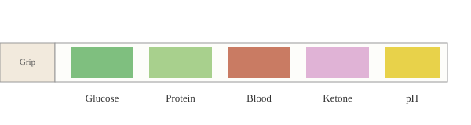

Click on any coloured pad below to jump to what that pad on the urine test strip checks for. Each pad corresponds to a specific test that can provide important information about your health.

- Glucose Pad – checks for sugar in the urine, an early flag for diabetes.
- Protein Pad – checks for protein leakage, a sign of possible kidney issues.
- Blood Pad – detects blood traces, often linked to infection or stones.
- Ketone Pad – detects ketones, seen in uncontrolled diabetes or fasting.
- pH Pad – measures acidity/alkalinity of the urine sample.